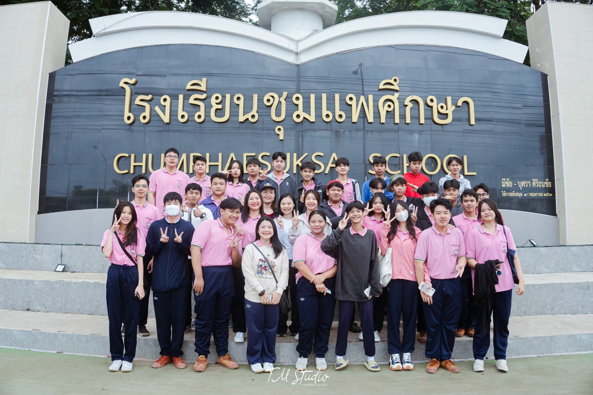

ทำเนียบรุ่นแผนการเรียนปัญญาประดิษฐ์
หน้าหลัก
ดูรุ่น
ย้อนกลับ
สมาชิก คณะอาจารย์ และนักเรียน
รุ่นแรก - ปัจจุบัน

สมาชิกรุ่น 1
สมาชิกรุ่น 2
สมาชิกรุ่น 3
 ทำเนียบรุ่นแผนการเรียนปัญญาประดิษฐ์
ทำเนียบรุ่นแผนการเรียนปัญญาประดิษฐ์